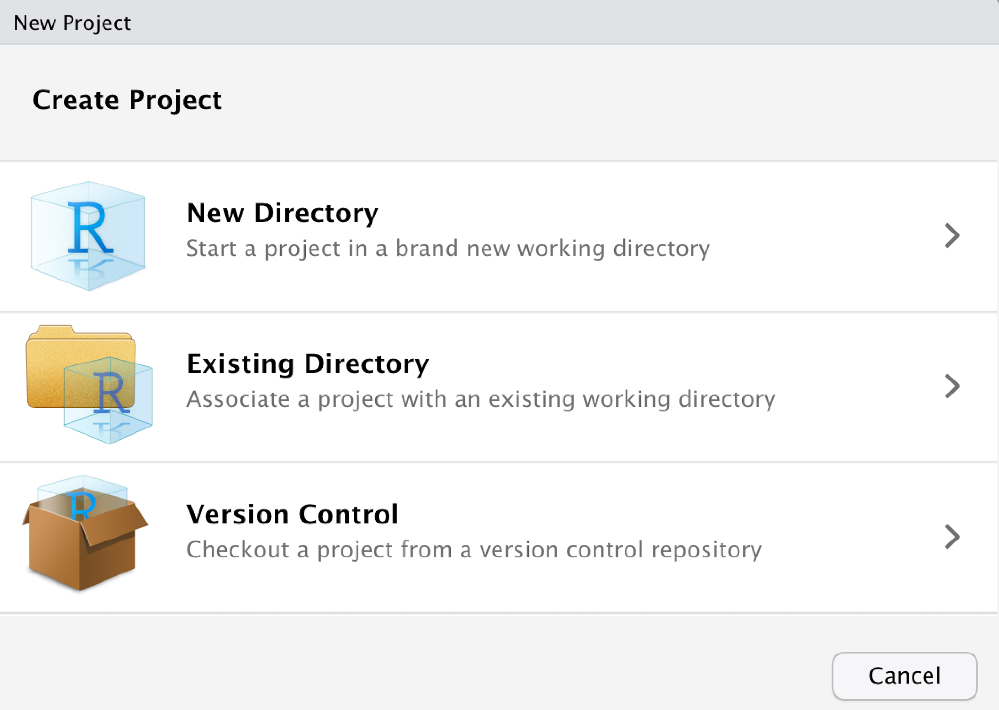

Chapter 3 R・Rstudioの準備と基本操作
<学習目標>
・RおよびRStudioをインストールする。
・RおよびRStudioの基本操作・基礎知識について学習する。
・会計データの読込・操作・書出ができる。【応用例】
- なし
【関連する会計研究】
- なし
3.1 この章について
この章では，会計データの分析をするうえで強力なツールとなるRおよびRStudioの基本操作を学習する。 財務諸表分析，費用直線の推定，利益調整の検証などの会計データを使った分析をしたいとき，データを読み込み，整理し，解析し，結果を出力するという一連の操作を行う必要がある。 簡単な分析や容量の軽いデータなら，これらの操作をExcel上で行うのも良いだろう。
しかし，Excelは高度な統計解析を行うには適していない。 そのため，Excelで統計解析を行うと，(1) 高度な統計解析ができない(もしくは極端に手間がかかる)，(2) データ量が多いためPCの動作が重たくなる，(3) 統計解析の過程を残しづらい，といった問題に突き当たる。 本書では，統計解析をする際に使用されるソフトウェアのなかで，おそらく世界中で利用者数が最も多いであろうRをつかって，会計データを分析する。
Rとは，統計解析のためのフリーソフトウェアである。 さらに，Rはオープンソースのソフトウェアであるため，GNU使用許諾のもとで自由に共有・改変することが認められている。 そのため，世界中の優秀なエンジニアによってRの修正や機能追加が日夜進められている。 最新の統計分析から，会計学研究で使用されているような専門的な分析手法まで，現在使われているほとんどの統計解析方法がRでは無料で利用できる。 Rは利用者も多いため，わからないことがあるときや，エラーが出て分析がうまくいかないときには，インターネット上で検索を行うことで，多くの問題を簡単に解決することができるだろう。
さて，会計データを使った分析をR上で行うには，自分のPCにRをインストールし，そこに会計データを読み込み，Rを操作し，分析結果を出力する必要がある。 本章では，RのインストールからRの基本操作までを解説する。 まず，RおよびRの統合開発環境であるRStudioのインストールを行う。次に，RおよびRStudioの基本操作と基礎知識を確認する。
3.2 インストール
3.2.1 Rのインストール
Rは開発元のCRANから簡単にダウンロードすることができる(https://cran.r-project.org/)。使用するPCがWindowsの場合は上記サイトへアクセス後，画面表示される「Download R for Windows」を選択する。

Figure 3.1: Rのインストール1
その後，「install R for the first time」を選択し，

Figure 3.2: Rのインストール2
「Download R x.x.x(最新バージョンの番号) for Windows」をクリックするとダウンロードを開始される13。

Figure 3.3: Rのインストール3
Macを使用する場合は，CRANへアクセス後に「Download R for (Mac) OS X」をクリックする。 クリックすると表示されるページの下部に「R x.x.x.(最新バージョンの番号).pkg」とあるので，最新バージョンを入手する場合はこちらをクリックしダウンロードを開始する。 古いバージョンを取得したい場合，同ページの「el-capitan/base」や「old」をクリックしてから，ダウンロードしたいバージョンを選択する14。
Rのダウンロードが完了したら，PC上でRを動かすことが可能になる。 ダウンロード後に表示されるRのアイコンからRを起動してみよう。 WindowsもしくはMacどちらで起動しても，次のように表示される。

Figure 3.4: Rの起動
ここでは，Rのバージョンと注意事項が表示されている。 画面の一番下には「>」と表示されているはずである。 この「>」はRが命令を待っている状態を意味する。 試しに，Rに計算をさせてみよう。 「>」の右に「1 + 2」と入力してエンターキーを押す。
1 + 2## [1] 3画面には「[1] 3」とRによる計算結果が表示されたはずである。
[1]は計算結果が1つであることを意味している。
Rでは，このような足し算(+)だけでなく，引き算(-)，掛け算(*)，割り算(/)，累乗(^)といった演算が使える。
このような演算の他にも，様々な関数が使用できる。
例えば，2のルートを計算したい場合はsqrt()関数を使う。
sqrt(2)## [1] 1.414214このように，sqrt()のカッコ内に数値を入力すればRに計算させることができる。
sqrt()関数の他にも，データ分析によく使う簡単な関数として自然対数(log)，四捨五入(round)などの関数がある。
関数は膨大な数がR上に用意されている。
本書では，必要に応じて適宜紹介する。
Rでは，次の2ステップを繰り返すことでデータ分析を進めていく。
- コードを入力して，Rに命令する。
- Rが計算を行い，命令された結果が返ってくる
このように，Rでは1つの命令を入力するごとに結果を確認できることから，Rはインタラクティブな言語だといわれている。
3.2.2 RStudioのインストール
Rだけでもデータ分析はできる。 とはいえ，本格的にデータ分析を行うのであれば，便利な機能が豊富に用意されている統合開発環境(Integrated Development Environment; IDE)を介してRを動かす方が便利だろう。 統合開発環境のなかでも最も代表的なものがRStudioである。 本書でもRStudioを用いて解説を行う。
Rstudioは，https://rstudio.com/products/rstudio/からデスクトップ版をダウンロードして使用する。 無料版と有料版があるが，無料版で十分である。本書では，RStudio 1.1.643 を使用している。 ダウンロード手順は，サイトにアクセスして，

Figure 3.5: Rstudioのインストール1
ページ中部にあるRstudio Desktopの「Download RStudio Desktop」をクリックし，

Figure 3.6: Rstudioのインストール2
RStudio DesktopのFREEをダウンロードをクリックし，

Figure 3.7: Rstudioのインストール3
WindowsかMacの最新バージョンのRStudioをクリックしてダウンロードする。15。ダウンロードしたファイルをインストールすることで，RStudioを使用することができるようになる16。

Figure 3.8: Rstudioのインストール4
3.3 RStudioの基本操作とRの基礎知識
3.3.1 RStudioの基本操作
RStudioを立ち上げると，このような画面が表示される。

Figure 3.9: Rstudionの起動
この画面が表示された場合はNew Directoryを選択後，New Projectを選択する。 このプロジェクトとは，RStudioで行う分析に関連するファイルをまとめて管理してくれる機能である。 ファイルの管理や，gitによるバージョン管理などを行うことができる。 New Projectを選択後，このプロジェクトをどこのディレクトリ(場所)に作成するか聞いてくるので，プロジェクトを保存したいディレクトリとプロジェクトの名前を入力する。 RStudioで分析を行うときは，分析ごとにこのプロジェクトを立ち上げる。
プロジェクトの設定が終わればこのような画面が表示されるはずである。 初期画面ではRStudioは3つに区切られている。 しかし，分析を行うときには，画面を4つに区切ることが多い。 そこで，左側画面の右上にある画面が2つ重なったマークをクリックして，ウィンドウを4つに区切ってみよう。 なお，この区切られた画面1つ1つをペインとよぶ。

Figure 3.10: Rstudioの画面
このように4つのペインが表示されたら，準備は完了である。 以下では，会計データを分析するのに最低限必要な各ペインの役割を確認していく。

Figure 3.11: Rstudionのペイン
まず，左下のペインはコンソール(console)とよばれる。 ここはRとのやりとりをする場所である。 四則演算や平方根の計算など，先ほど試しに実行したRとのやりとりはここで行うことができる。
次に，左上のペインはソース(source)とよばれ，Rへ命令するコードの読み込み・書き込み・保存ができるペインになる。 データ分析を行うとき，「元データからどのような操作を行って分析結果が得られたのか」を記録しておく必要がある。 もし，この記録がなければ，どのような操作で分析結果が得られたのかわかりづらく，複雑な分析では同じ分析結果を再び得ることも難しい。 これは，分析結果の信頼性を得られなくなることを意味する。
そこで，R上でどのような操作を行ったかを記録しておく必要がある。 コンソールペイン上のRとのやりとりを保存してもよいが，次の2つの問題がある。 1つ目は，コンソールペインでのやりとりは命令の入力内容と結果の出力が交互に表示される点である。 そのため，「R上でどのような操作を行ったのか」という命令の入力だけを見たい場合，結果の出力も表示されるコンソールペインのやりとりでは，記録が長くなってしまう。
2つ目は，Rでは誤ったコードを入力してしまった場合でも，エラーという結果を返してくれる点である。 まだRの操作になれていないとき，あるいは慣れない関数を使ったときなどは，エラーと格闘しながら誤ったコードを修正することになる。 コンソールペインでのやりとりは，このようなエラーも記録されてしまうため，記録が誤ったコードとエラーだらけになってしまう。 したがって，コンソールペインとは別に，コードを記録するする場所が必要になる。 この記録を残す場所がソースペインである。
ソースペインでの記録は，コードの清書だと思ってもらえればよい。 一般に，プログラミングにかかる時間の多くはコードを打ち込む時間ではなく，入力したコードを確認・修正する時間だといわれている。 これは会計のデータを分析するときでも同様である。 複雑な分析をするとき，R上のコードは数十行，場合によっては数百行に及ぶ。 このような長文のコードを取り扱うとき，コードの視認性が悪いと作業効率が大幅に低下してしまうだろう。 そのため，R上で行った操作を見やすい形式に清書して，ソースペインに記録することは，作業の効率化の観点からも重要な作業である。
それでは，先ほど実行した簡単なコードをソースペインに清書してみよう。
下記コードを左上のソースペインに入力する。
なお，「#」はコメントアウトの記号であり，「#」と同じ行の右側のコードはRにすべて無視される。
Rへの命令ではなく，自分を含めユーザーへコメントを残したい場合に使用する。
コードがかけたら，ソースペインの実行したい範囲をドラッグで指定し，Ctrl+Enter（Macの場合はcommand + Enter）を押すと，左下のコンソールペインで実行される17。
1 + 2## [1] 3sqrt(2)## [1] 1.414214このようにソースペインに入力したコードからでも，コンソールペインでのやりとりを再現できる。 それでは，このスクリプトファイルを実際に保存してみよう。 ファイルを保存するには，ソースペインのフロッピーディスク(保存)アイコンをクリックすると保存できる。 なお，新規のスクリプトファイルを開く場合には，画面左上の白紙アイコンを，既存のスクリプトファイルを開く場合には，フォルダが開いているアイコンをクリックする。

Figure 3.12: ファイルの保存
3.3.2 Rの基礎知識
簡単なRとのやりとりがRStudio上で実行できるようになったところで，会計データ分析をするために最低限必要なRおよびRStudioの基礎知識を学習しよう18。
- ベクトル
- 代入
- データ型
- パッケージ
まず，読み取った会計データは，ベクトルとして操作することが多い。
ベクトルとは，(1, 2, 3)のような数字列のことである。
R上でデータをベクトルだと認識させるためには，括弧の前にcをつけて，c(1, 2, 3)と表記する。
このベクトルをつかって，下記のように演算や関数を適用してみよう。
# ベクトル
c(1, 2, 3) + c(2, 3, 4)## [1] 3 5 7c(1, 2, 3) * c(2, 3, 4)## [1] 2 6 12sqrt(c(1, 2, 3))## [1] 1.000000 1.414214 1.732051ベクトルを演算するとき，演算のたびにc(1, 2, 3)と書くのは大変である。
もし，c(1, 2, 3)というのをどこかに格納しておき，その格納した場所で演算するよう指示できれば，入力するコードが短くてすむ。
このベクトルなどををどこかへ格納する操作を「代入」とよぶ。
そこで，c(1, 2, 3)とc(2, 3, 4)をvec1とvec2という新たに作成した変数に代入してみよう。
# 代入
vec_1 <- c(1, 2, 3)
vec_2 <- c(2, 3, 4)これで，c(1, 2, 3)をvec1に，c(2, 3, 4)をvec2に代入できた。
先ほどと同じ演算および関数をvec1とvec2に適用してみると，同じ結果が得られるだろう。
vec_1 + vec_2## [1] 3 5 7vec_1 * vec_2## [1] 2 6 12sqrt(vec_1)## [1] 1.000000 1.414214 1.732051ベクトルには数値だけではなく，文字も入力することができる。 たとえば，下記のように記述する。
# 型
char_vec <- c("a", "b", "c")
char_vec## [1] "a" "b" "c"しかし，当然ながら文字と数値は足し算などをすることはできない。試しに下記のコードを実行してみると，このようなエラーが表示されるだろう。
vec_1 + char_vecエラーからわかるように，Rでは入力されたベクトルや値が数字なのか文字なのか，データの形式を認識している。
これをデータ型という。
データ型には実数(numeric;double;integer)，整数(integer)，文字(character)，論理値(logical)，日付(Date)などがある。
変数の型を調べるにはclass()関数を使う。
分析を行うときは，データ型に注意しよう19。
class(vec_1)## [1] "numeric"class(char_vec)## [1] "character"Rでは，関数とデータを機能別にまとめたパッケージ（もしくはライブラリ）とよばれるコード・ライブラリがある。
このパッケージは世界中のRユーザーによって作成されており，数千種類もの数が存在する。
たとえば，高速な分析を可能にするtidyverse，きれいなグラフを出力するggplot2，心理統計でよく使用される手法をまとめたpsychなどがある。
Rでは既存の関数でやりたいことが実行するのが難しいとき，このパッケージをインストールして，パッケージに含まれている関数を使う。
パッケージをインストールするには，install.packages()関数を使う20。
install.packages()関数を利用する場合には，パッケージの名前をダブルクオーテーション（""）でくくる必要があることに注意しよう。
また，「Do you want to install from sources the package which needs compilation? (Yes/no/cancel)」と表示された場合は「Yes」と入力すること。
本書では，tidyverseというパッケージの関数を使用してデータ処理をする。 試しにこのtidyverseをインストールしてみよう。なお，このテキストでは tidyverse 1.2.1を使用する。
# パッケージのインストール
install.packages("tidyverse")これでパッケージのインストールは完了である。
インストールしたパッケージを使うには，R上でパッケージをロードする必要がある。
パッケージのロードには，library()関数もしくはrequire()関数を使う21。
# パッケージの読み込み
library(tidyverse)古いバージョンのRを取得したい場合は，最後のページの下部にある「Previous releases」をクリックすれば，各バージョンのダウンロードページへのリンクが表示される。このテキストでは，R 3.5.1.を使用している。↩︎
Macの場合はOSによっては対応していないバージョンもあるため，ダウンロード時にはページの注意事項を確認してからダウンロードすること。↩︎
サイトの画像は2021年3月16日時点のもの。↩︎
RStudioをダウンロードしなくともRStudio cloudというRStudioをクラウド上で操作できるサービスもあるhttps://rstudio.cloud/)。このサービスはアカウントを作成するか，もしくはGoogleアカウント・GitHubアカウントをもっていれば利用できる。開発中のアルファ版ではあるが，異なるPC環境でもサーバー上で同じ動作をするので授業等にはこちらの方が便利かもしれない。なお，RStudio cloudではローカルフォルダではなく，サーバー上フォルダを利用するのでデータをアップロードする必要があることに注意してほしい。↩︎
本書では，Rを実行した結果について，コンソールペインに写し出される結果を掲載している。↩︎
紙幅の関係からここでは以下の基礎知識についてのみ説明する。ここでの説明で足りないと感じる読者は， 舟尾 (2009) 『The R tips』(オーム社)や Lander (2017) 『みんなのR (第2版)』（マイナビ出版）などR自体のテキストを参照してほしい。↩︎
特に，数値データであるにも関わらずR上では文字型(character)として認識されていることもある。これはデータの中に数字ではないデータが入っている場合にしばしば発生するので注意すること。↩︎
パッケージのダウンロードにはこの他に，RStudioのToolsタブからダウンロードする方法，右下ペインのpackageタブを開き，そこからダウンロードする方法などもある。↩︎
なお，tidyverseを読み込むと，上記のようにconflictsと表示されることがある。これはRにデフォルトで入っている関数とtidyverseに入っている関数で名前が重複する関数があることを意味している。分析するときには注意しよう。今回はデフォルトで入っているstatsパッケージと重複しているので，デフォルトの関数を使いたいときには
stats::lagのようにパッケージ名にコロンを2つ(::)をつけたあと，関数名を記入すればよい。↩︎